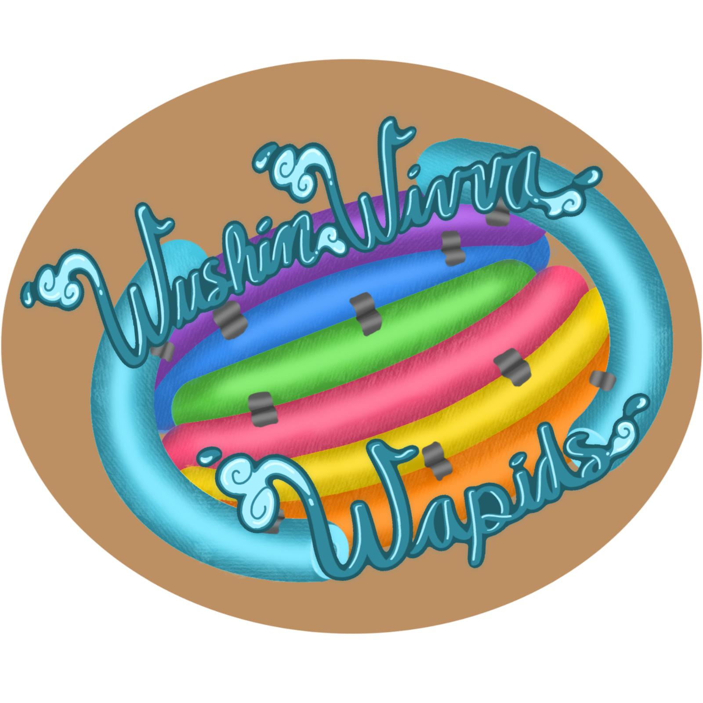

Overview
Purpose
Hiya folks and welcome to da Wushin Wivva Wapids! We are a comunity of highly specialized people who are totally trained in wite water wafting. We are a family owned bisnes that we have kept in the family for generations. And today, you all will also become part of the Wushin Wivva Wapids family!
Audience
Here at da Wushin Wivva Wapids, we remember all dose who come by and go a swimmin wit us. If you look here, we've even got a tally goin for those who don't return. It makes us aweful sad when ya don't come back, but dats life I guess. Also, we got some floaties for the kiddies, cat and human, but they might got some holes in em, but y'all can just plug dat up with a finger. Alternatievely, ya waft is equipped with some heavy duty spit and duct tape, so ya can just take sum of dat if ya like to plug up dem holes. Just remember, ya tradin ya safty for deirs.
Branding
Website Logo

Style Guide
Color Palette
| Primary | Secondary | Accent 1 | Accent 2 |
|---|---|---|---|
Typography
Heading Font: Garamond
Paragraph Font: Georgia
Normal Paragraph Example
Oter dan dat, we are a pretty standurd wite water waftin company. We prioritize your safty over all else! Also, just a side note, umm, da ors that we usualy use got a little lost in shipping so we don't got those no more. However, ya can still paddl if ya just lean ova da side a lil bit.
Colored Paragraph Example
But woah dere! ya gotta be careful cause dat boats a lil weak with all 10 of yas in it, so make sure ya lean over carefully. Then ya just gotta stick ya hand in da water and paddle like ya wood wit da ors! Also be careful wit the crockadiles, cause they be awefully hungry dis season!
Navigation with Hover
Site Map
Wireframes
Home